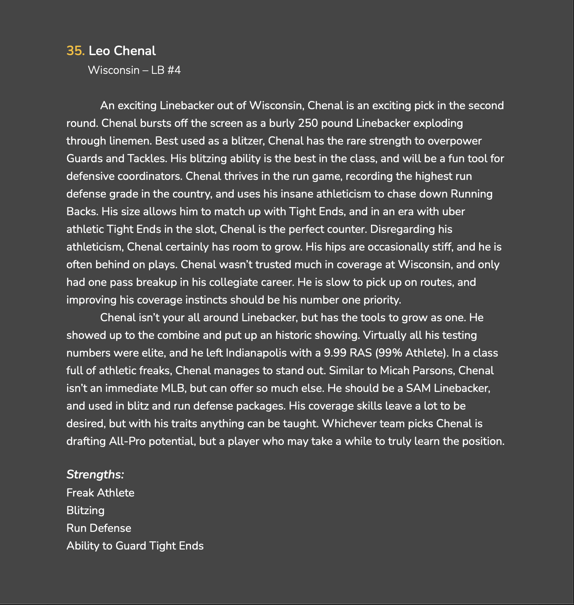
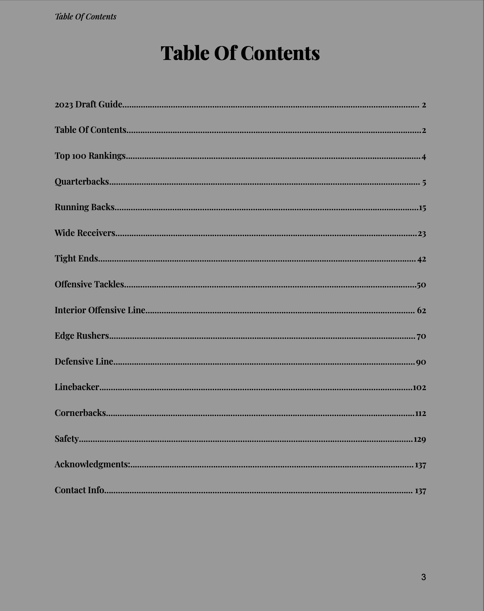
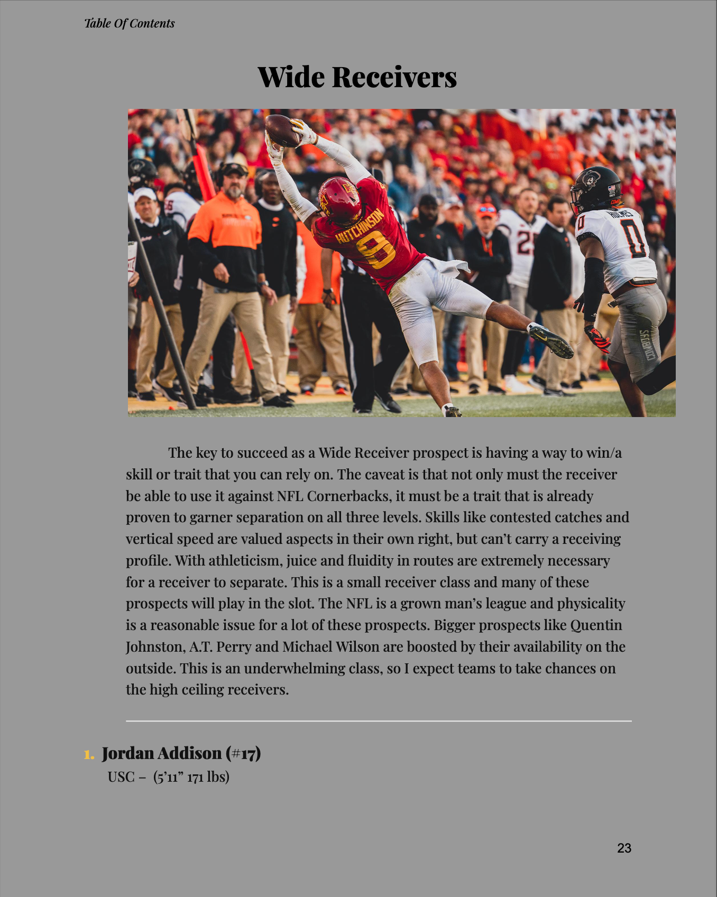

Visual Samples
2023 Draft Guide Cover: Full custom-designed guide released ahead of the NFL Draft.

2022 Draft Guide Sample Profile: Example player breakdown including strengths, weaknesses, and NFL projection.

Table of Contents: Organized, clickable navigation for 250+ prospects and 150+ pages.

2023 Positional Rankings

Wide Receiver Sample: Deep dive into positional traits, athletic testing, and draft projection.